Czech Republic
Škoda
Škoda traces its roots to Laurin & Klement, who built bicycles in 1895 and cars from 1905. Part of the Volkswagen Group since 1991, it is known for practical, spacious cars.
- Founded
- 1895
- Models
- 43
- Generations
- 54
- In production
- 14
- generations
- Photos
- 46
Range
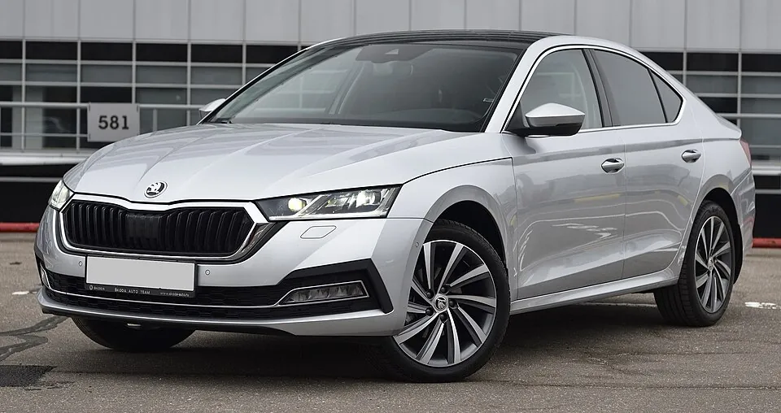
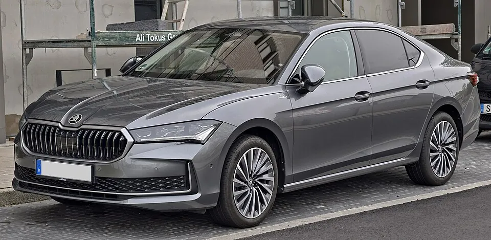
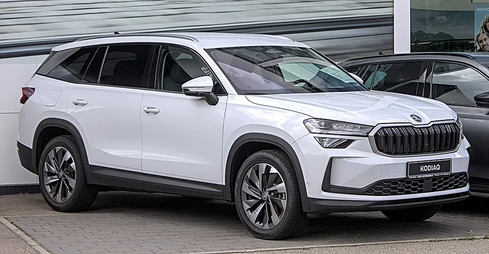
Electric

.jpg){kind=link}
.jpg){kind=link}
_%E2%80%93_f_12042026.jpg){kind=link}


All models and generations
37 models, each with all its generations.
In production
 Škoda Epiq
Škoda Epiq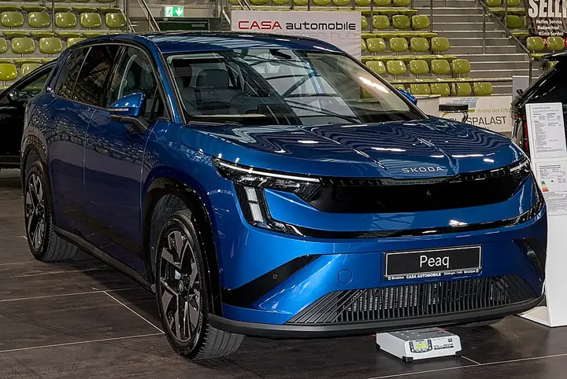
Škoda Peaq- Škoda Elroq
- Škoda Kylaq
- Škoda Slavia
- Škoda Kushaq
 Škoda Enyaq
Škoda Enyaq Škoda Scala
Škoda Scala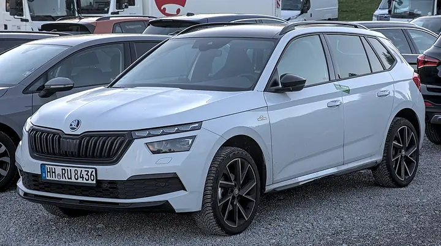
Škoda Kamiq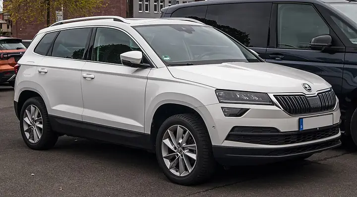
Škoda Karoq Škoda Kodiaq
Škoda Kodiaq- Škoda Fabia
 Škoda Octavia
Škoda Octavia Škoda Superb
Škoda Superb
Past models
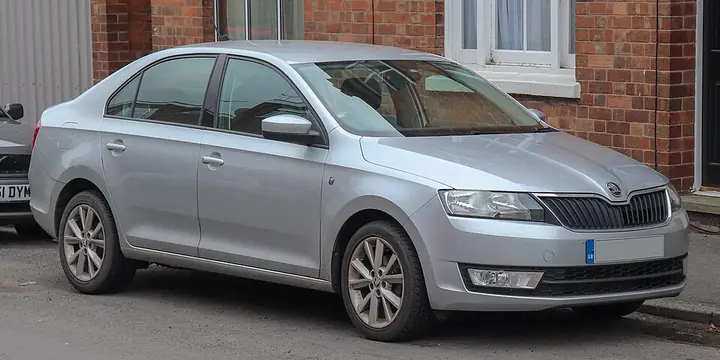
Škoda Rapid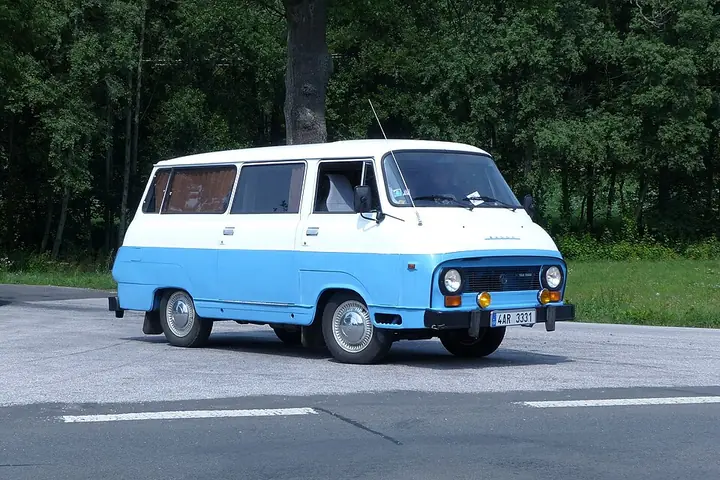
Škoda 1203 Škoda Yeti
Škoda Yeti- Škoda Roomster
 Škoda Felicia
Škoda Felicia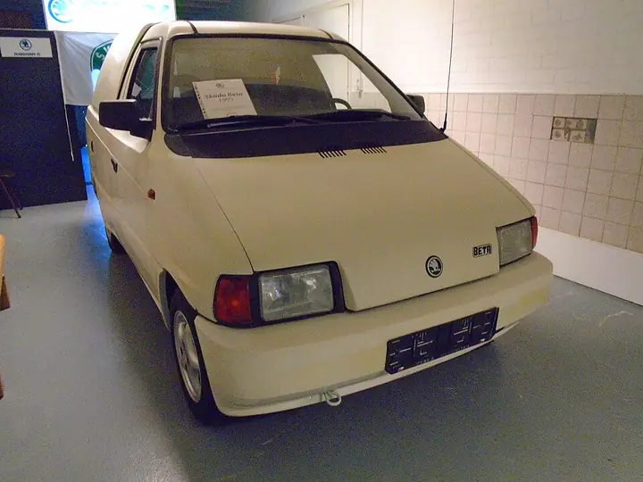
Škoda Beta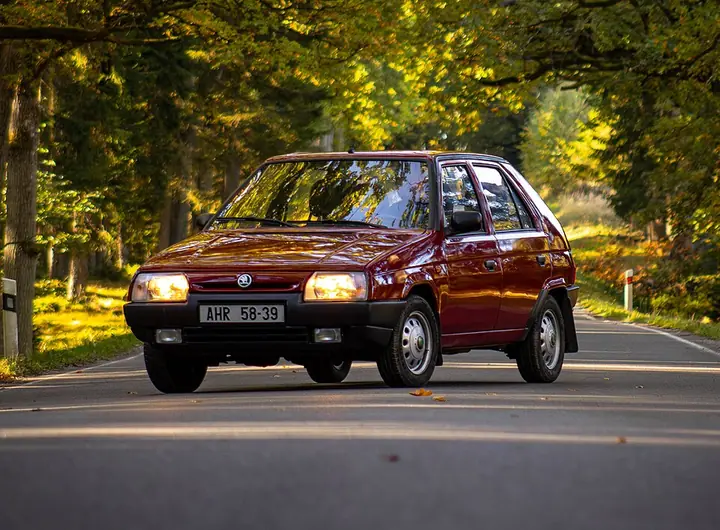
Škoda Favorit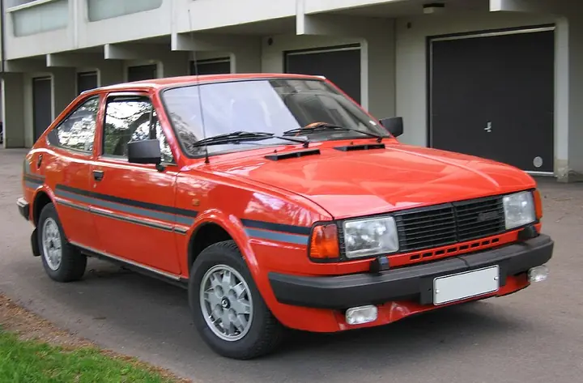
Škoda Garde/Rapid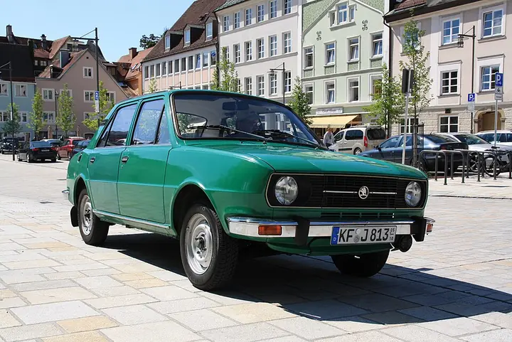
Škoda Type 742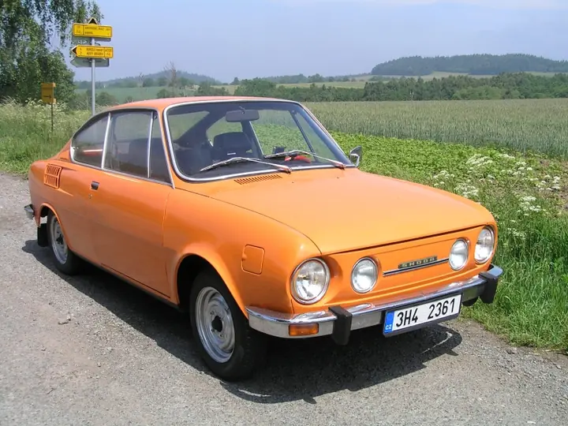
Škoda 110 R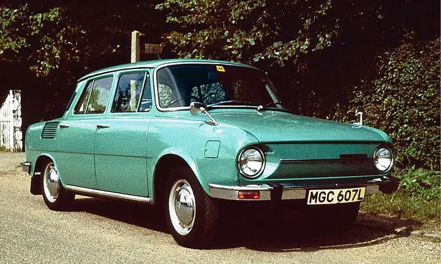
Škoda 100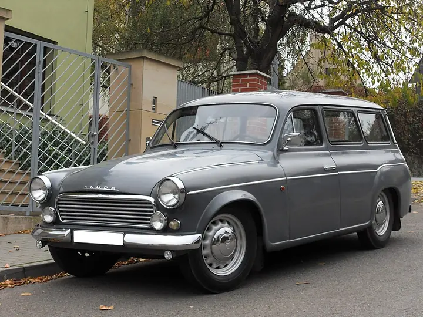
Škoda 1202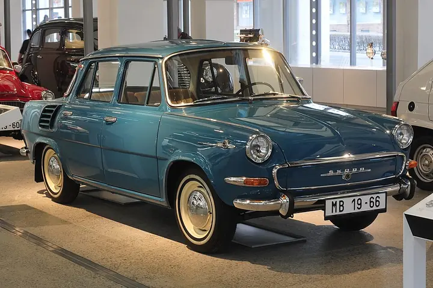
Škoda 1000 MB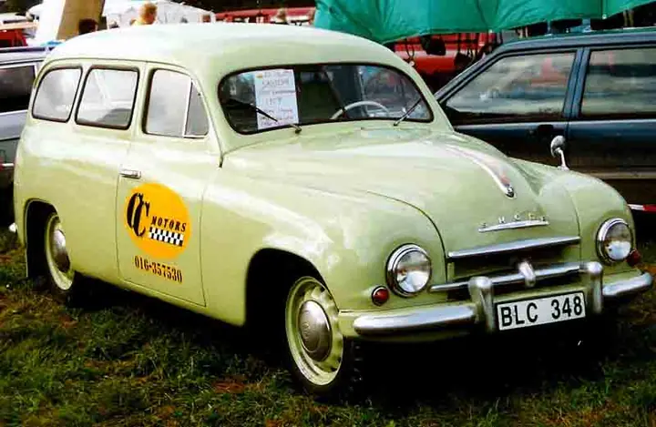
Škoda 1201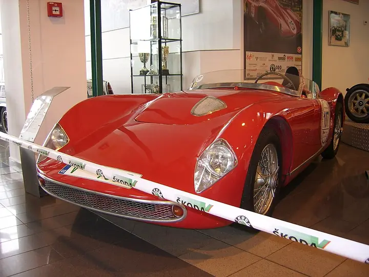
Škoda 1100 OHC- Škoda 440
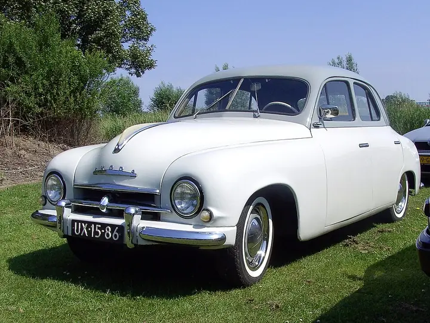
Škoda 1200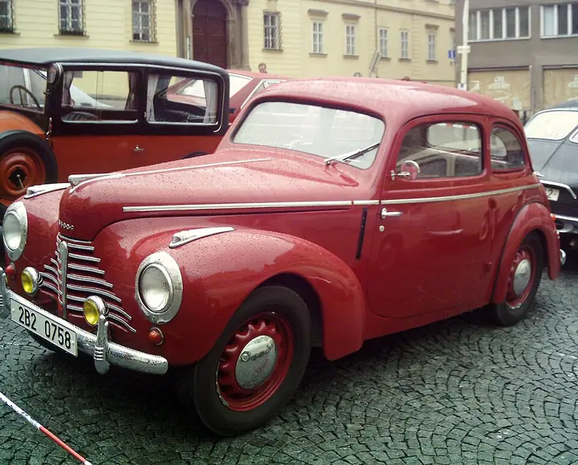
Škoda 1101/1102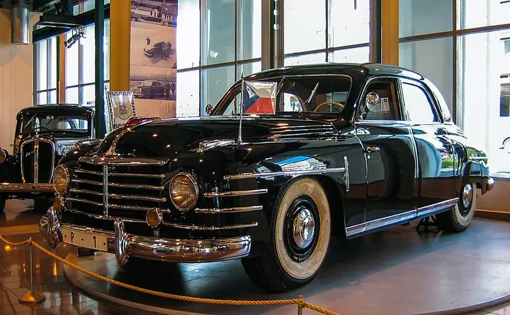
Škoda VOS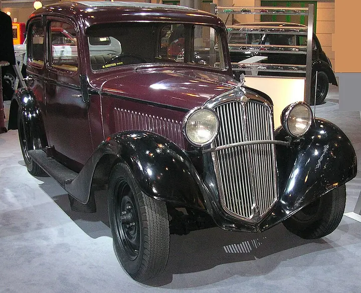
Škoda Popular- Škoda 637
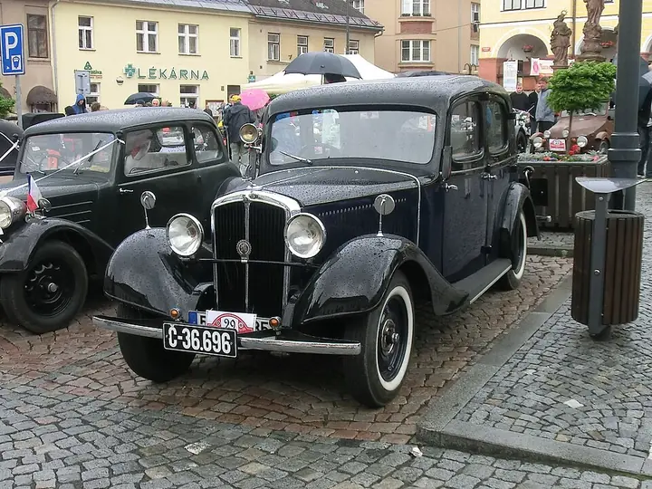
Škoda 633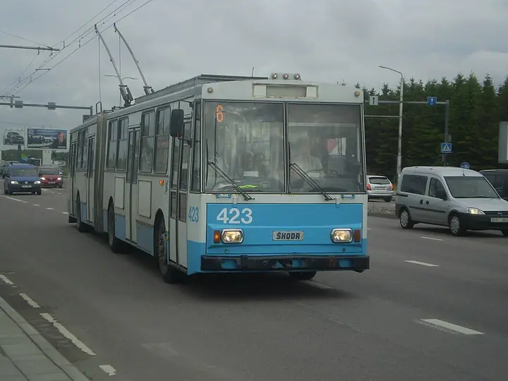
Škoda 15Tr
Racing cars
6 racing cars: Formula One, endurance, rally and touring.
Source: Wikipedia, CC BY-SA 4.0.